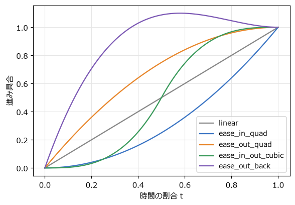
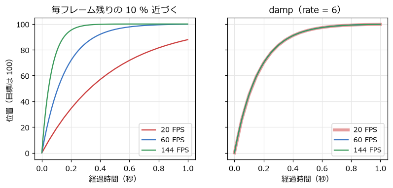
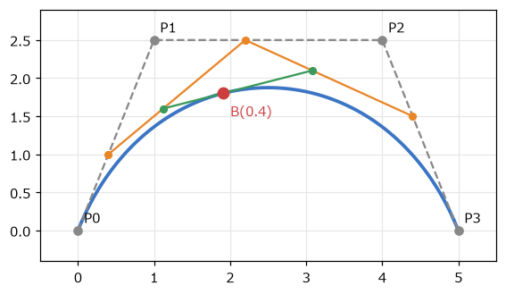
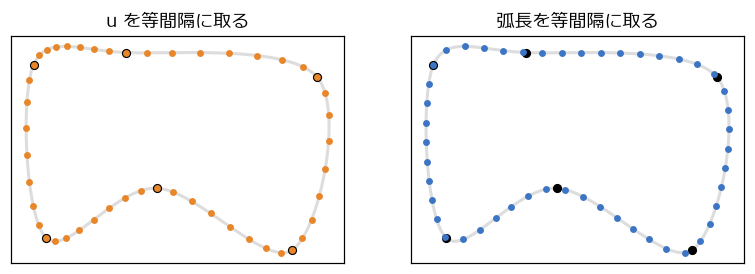

8. 補間・イージング・曲線
ゲームの「手触り」の多くは、値が A から B へどう変わるかで決まる。ボタンを押すとメニューが滑らかに出てくる、カメラがプレイヤーに遅れてついてくる、敵が決められた経路をなぞって飛ぶ。この章では、こうした動きを作る補間の道具を扱う。
8.1. 線形補間と逆補間
線形補間（lerp、linear interpolation）は、2 つの値 \(a\) と \(b\) の間を、割合 \(t\) で結ぶ計算である。
\(t = 0\) なら \(a\)、\(t = 1\) なら \(b\)、\(t = 0.5\) ならちょうど中間になる。数だけでなく、位置（ベクトル）や色にもそのまま使える。第 3 章の描画の補間も線形補間である。
その逆に、値 \(v\) が \(a\) から \(b\) までのどの割合の位置にあるかを求めるのが逆補間である。2 つを組み合わせると、ある範囲の値を別の範囲の値に変換（リマップ）できる。
1def lerp(a: float, b: float, t: float) -> float:
2 """線形補間。t = 0 で a、t = 1 で b になる。"""
3 return a + (b - a) * t
4
5
6def inverse_lerp(a: float, b: float, value: float) -> float:
7 """lerp の逆。value が a から b までのどの割合の位置にあるかを返す。"""
8 return (value - a) / (b - a)
9
10
11def remap(value: float, in_a: float, in_b: float, out_a: float, out_b: float) -> float:
12 """範囲 [in_a, in_b] の値を、範囲 [out_a, out_b] の対応する値に変換する。"""
13 return lerp(out_a, out_b, inverse_lerp(in_a, in_b, value))
14
15
リマップは、ゲームのパラメーターの調整でよく使う。たとえば「敵との距離が 300 ピクセルから 50 ピクセルに近づくにつれて、警告音の音量を 0 から 1 に上げる」なら remap(distance, 300, 50, 0, 1) と書ける（範囲の外では clamp で 0～1 に収める）。
8.2. イージング関数
物を A から B へ 1 秒かけて動かすとき、\(t\) を時間に比例させて線形補間すると、等速で動いて急に止まる。機械的で硬い印象になる。そこで、時間の割合 \(t\) を 0～1 の別の値に変換する関数 \(f(t)\) を挟み、\(\mathrm{lerp}(a, b, f(t))\) で動かす。この関数をイージング関数と呼ぶ。\(f(0) = 0\)、\(f(1) = 1\) であれば、始点と終点は変わらず、途中の速さの変化だけが変わる。
1def ease_in_quad(t: float) -> float:
2 """ゆっくり動き出して加速する。"""
3 return t * t
4
5
6def ease_out_quad(t: float) -> float:
7 """速く動き出して減速しながら止まる。"""
8 return 1 - (1 - t) * (1 - t)
9
10
11def ease_in_out_cubic(t: float) -> float:
12 """ゆっくり動き出し、途中で速くなり、ゆっくり止まる。"""
13 if t < 0.5:
14 return 4 * t * t * t
15 return 1 - (-2 * t + 2) ** 3 / 2
16
17
18def ease_out_back(t: float) -> float:
19 """目標を少し行き過ぎてから戻る。"""
20 c1 = 1.70158
21 c3 = c1 + 1
22 return 1 + c3 * (t - 1) ** 3 + c1 * (t - 1) ** 2
23
24
図 8.1 は、それぞれの関数のグラフである。グラフの傾きが速さを表す。


図 8.1 イージング関数
関数 |
向いている場面 |
|---|---|
ease-out（減速して止まる） |
画面に入ってくる UI、カメラの移動。素早く反応しつつ、柔らかく止まる |
ease-in（加速しながら動く） |
画面から出ていく UI、落下し始める物 |
ease-in-out（ゆっくり始まりゆっくり止まる） |
場面の切り替え、2 点間を往復する足場 |
back（行き過ぎて戻る） |
ボタンやアイコンの登場。弾むような楽しい印象を与える |
ease_out_back の定数 1.70158 は、目標を約 10 % 行き過ぎるように選ばれた値である。イージング関数の名前と式は、Robert Penner がまとめたものが広く使われている。easing.py の上の 5 行で、それぞれの動きを見比べられる。
8.3. フレームレートに依存しない滑らかな追従
カメラがプレイヤーを追いかけるとき、目標の位置が毎フレーム変わるので、イージング関数（始点と終点が決まっている）は使えない。よく使われるのは、毎フレーム「残りの距離の一定の割合だけ近づく」方法である。
1camera_x = lerp(camera_x, target_x, 0.1) # 毎フレーム残りの 10 % だけ近づく
この書き方は簡単で、近づくほど遅くなる自然な動きになる。しかし、「1 フレームあたり」の割合なので、第 3 章と同じくフレームレートによって追従の速さが変わってしまう（図 8.2 の左）。
1 フレームで残りの距離が \((1 - 0.1)\) 倍になるとすると、1 秒後には \((1 - 0.1)^{\text{FPS}}\) 倍になる。これを、フレームレートによらず「1 秒あたり一定の割合で減る」ように直すには、指数関数を使う。
残りの距離は 1 回の更新で \(e^{-k\,\Delta t}\) 倍になる。\(\Delta t\) を 2 回に分けて更新しても \(e^{-k\,\Delta t/2} \times e^{-k\,\Delta t/2} = e^{-k\,\Delta t}\) 倍になり、分け方によらず同じ結果になる。\(k\) は追従の速さで、残りの距離は 1 秒で \(e^{-k}\) 倍になる。この方法を指数関数的減衰と呼び、本書では damp という関数にしている。
1def damp(current: float, target: float, rate: float, dt: float) -> float:
2 """current を target へ指数関数的に近づける。dt の分け方によらず、同じ時間で同じ位置に着く。"""
3 return lerp(current, target, 1 - math.exp(-rate * dt))

図 8.2 毎フレーム残りの 10 % 近づく方法（左）と damp（右）。目標は 100
easing.py の下の 2 つの四角は、マウスの x 座標を 2 つの方法で追いかける。1 キーで 20 FPS にすると、橙の四角だけ追いつくのが遅くなる。第 15 章の総合演習のカメラも damp で追従させている。
8.4. ベジェ曲線
弾の軌道や敵の移動経路を、なめらかな曲線で作りたいことがある。ゲームで最もよく使われる曲線がベジェ曲線である。
ベジェ曲線は、線形補間を何段も重ねて作る。図 8.3 の 4 つの制御点 \(P_0\) ～ \(P_3\) による 3 次ベジェ曲線では、次のように点を求める。
隣り合う制御点の間を、割合 \(t\) で線形補間する（橙の 3 点）。
その 3 点の隣どうしを、さらに \(t\) で線形補間する（緑の 2 点）。
その 2 点を \(t\) で線形補間した点が、曲線上の点 \(B(t)\) である（赤）。


図 8.3 3 次ベジェ曲線と、t = 0.4 の点の求め方
この求め方をド・カステリョのアルゴリズムと呼ぶ。\(t\) を 0 から 1 まで動かすと、点は \(P_0\) から出発して \(P_3\) に着く。\(P_1\) と \(P_2\) は曲線を引き寄せるが、曲線は通らない。
1def cubic_bezier(p0: pygame.Vector2, p1: pygame.Vector2, p2: pygame.Vector2, p3: pygame.Vector2,
2 t: float) -> pygame.Vector2:
3 """3 次ベジェ曲線。線形補間を 3 段重ねる。"""
4 a, b, c = lerp_point(p0, p1, t), lerp_point(p1, p2, t), lerp_point(p2, p3, t)
5 return lerp_point(lerp_point(a, b, t), lerp_point(b, c, t), t)
展開すると、次の式になる。
制御点が 3 つの 2 次ベジェ曲線は、放物線の弾道を「発射点、頂点付近、着弾点」の 3 点で指定したいときに便利である。ベジェ曲線は、ドローソフトのパスやフォントの輪郭にも使われている。
8.5. Catmull-Rom スプライン
ベジェ曲線は、間の制御点を曲線が通らない。敵に「この点とこの点とこの点を順に通って飛んでほしい」という場合は、すべての点を通る曲線の方が扱いやすい。そのような曲線の代表が Catmull-Rom スプラインである。
Catmull-Rom スプラインは、通過点 \(P_1\) から \(P_2\) までの区間を、前後の点 \(P_0\) と \(P_3\) を使って決める。区間の端での曲線の向きを「前後の点を結ぶ向き」にそろえるので、区間どうしが滑らかにつながる。
1def catmull_rom(p0: pygame.Vector2, p1: pygame.Vector2, p2: pygame.Vector2, p3: pygame.Vector2,
2 t: float) -> pygame.Vector2:
3 """p1 から p2 までの区間の Catmull-Rom スプライン。p0 と p3 は区間の両端での向きを決めるのに使う。"""
4 t2, t3 = t * t, t * t * t
5 return 0.5 * (2 * p1 + (p2 - p0) * t + (2 * p0 - 5 * p1 + 4 * p2 - p3) * t2 + (3 * p1 - p0 - 3 * p2 + p3) * t3)
curves.py では、6 つの通過点をこの曲線で結んで閉じた経路を作っている。区間 \(i\) の点を求めるとき、前後の点は番号を通過点の数で割った余りで選ぶので、最後の点の次は最初の点に戻る。
8.6. 等速で曲線上を移動させる
曲線のパラメーター \(t\)（複数の区間をつないだ曲線では \(u\)）を一定の速さで増やしても、曲線上を一定の速さで動くとは限らない。図 8.4 の左は、\(u\) を等間隔に取った点である。通過点の間隔が広い区間では点がまばらになり、狭い区間では密になっている。つまり、広い区間では速く、狭い区間では遅く動く。

図 8.4 Catmull-Rom スプライン上で、u を等間隔に取った点（左）と、弧長を等間隔に取った点（右）
一定の速さで動かすには、曲線に沿った距離（弧長）から \(u\) を逆算する。弧長を式で求めるのは難しいので、次のように数値的に表を作る。
\(u\) を細かく区切り、隣り合う点の距離を足していって、各 \(u\) までの弧長の表を作る。
進みたい距離が表のどこにあるかを二分探索で探し、前後の値から \(u\) を線形補間で求める。
1class ArcLengthTable:
2 """曲線を細かく区切って測った長さの表。曲線に沿った距離から、パラメーター u を逆引きする。"""
3
4 def __init__(self, curve: Callable[[float], pygame.Vector2], u_max: float, samples: int) -> None:
5 self.us = [u_max * i / samples for i in range(samples + 1)]
6 self.lengths = [0.0]
7 previous = curve(0.0)
8 for u in self.us[1:]:
9 point = curve(u)
10 self.lengths.append(self.lengths[-1] + previous.distance_to(point))
11 previous = point
12
13 @property
14 def total(self) -> float:
15 """曲線全体の長さ。"""
16 return self.lengths[-1]
17
18 def u_at(self, distance: float) -> float:
19 """始点から曲線に沿って distance だけ進んだ位置のパラメーター u。"""
20 distance = max(0.0, min(self.total, distance))
21 i = bisect.bisect_left(self.lengths, distance)
22 if i == 0:
23 return self.us[0]
24 # 表の間は直線とみなして補間する
25 d0, d1 = self.lengths[i - 1], self.lengths[i]
26 ratio = (distance - d0) / (d1 - d0) if d1 > d0 else 0.0
27 return self.us[i - 1] + (self.us[i] - self.us[i - 1]) * ratio
距離を時間に比例させて増やし、u_at で \(u\) に変換すれば、図 8.4 の右のように一定の間隔で進む。curves.py を実行すると、橙の点（\(u\) が一定の速さ）と水色の点（距離が一定の速さ）の動きの違いがよく分かる。表は経路を作ったときに 1 回だけ作ればよい。